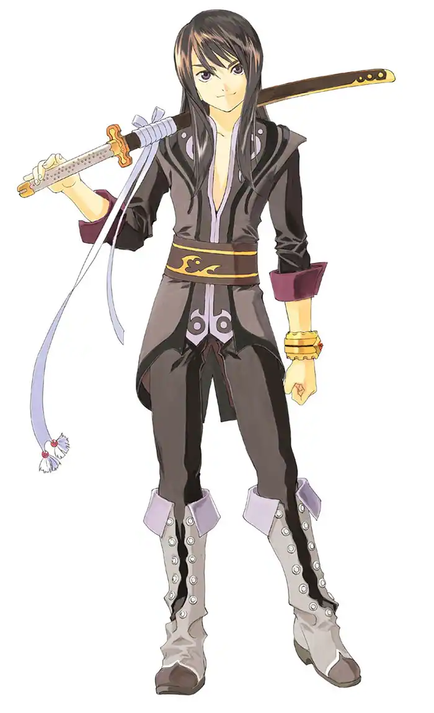
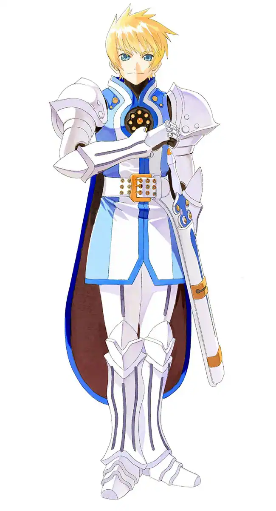
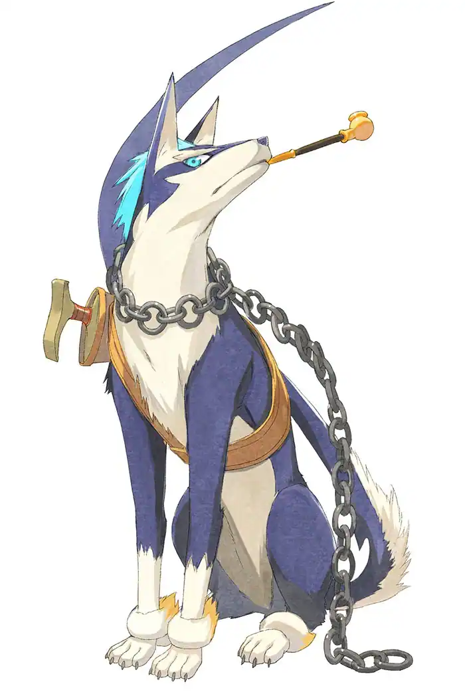
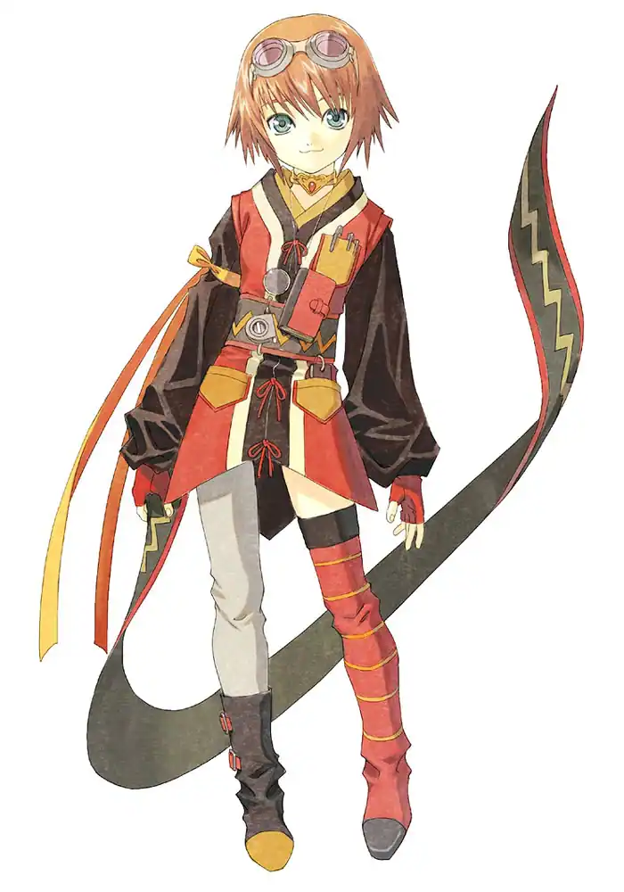
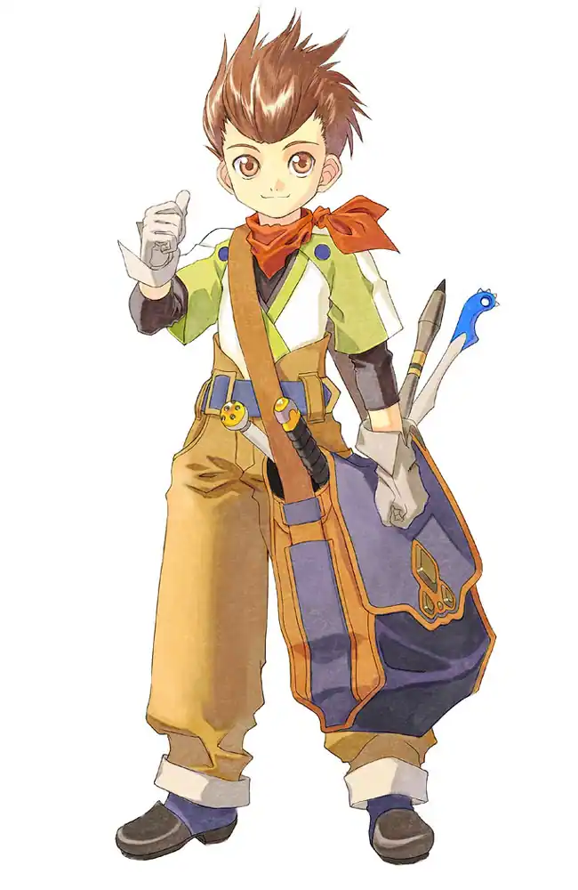
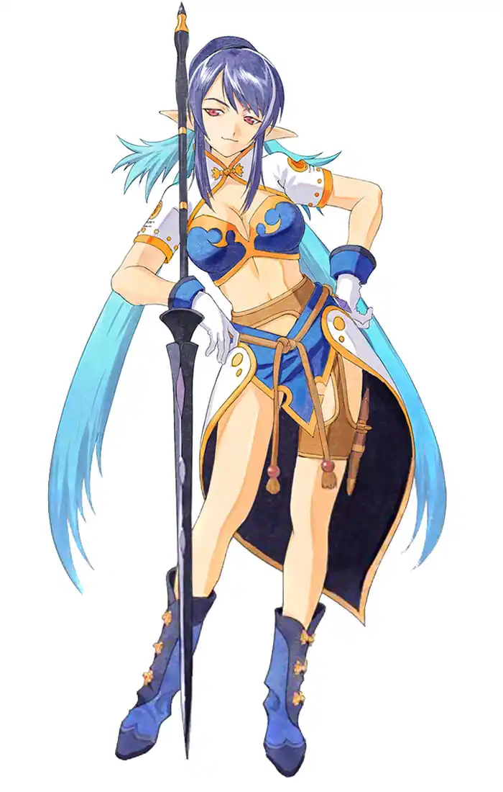
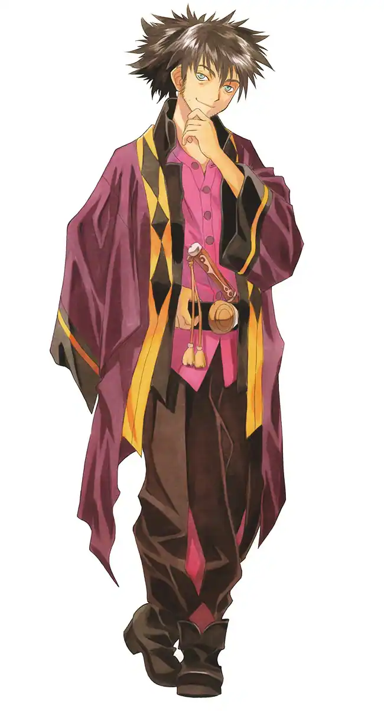

Yuri Lowell
Interpretado por: Kosuke Toriumi (JP) / Troy Baker/Grant George

(EN)
El personaje principal del juego, un joven que vive en los barrios
bajos
de la capital, Zaphias, y
ayuda a los necesitados. Es muy sarcástico y cínico pero tiene una buena formación. Al igual que
su
amigo de la
infancia Flynn, una vez fue un caballero, lo que le dio la libertad de hacer viajes cortos fuera
de
su ciudad
natal, pero se retiró debido a su aversión al gobierno. Ahora trabaja como guardaespaldas.
Envidioso
de Flynn,
decide irse de la ciudad por su cuenta. Después de los hechos que lo llevaron a ser encarcelado,
conoce a
la princesa Estelle y parten juntos para descubrir el mundo más allá de la capital, Zaphias.
Estellise Sidos Heurassein
Interpretada por: Mai Nakahara (JP) / Eden Riegel (EN)

Si bien nombre real es Estellise, Yuri la apoda "Estelle", nombre que
adopta por el resto de la
aventura. Permaneció encerrada durante mucho tiempo en su castillo de Zaphias donde aprendió a
luchar con
espada. Queriendo explorar el mundo, aprovecha la oportunidad y se va con Yuri fuera de la
capital.
Está muy
sorprendida de lo que descubre sobre el mundo y le gusta aprender leyendo libros.
Flynn Scifo
Interpretado por: Mamoru Miyano (JP) / Sam Riegel (EN)

Un caballero que lucha con espada y escudo. Compartió su infancia con
Yuri
aunque estuvieron muy
contrastados, tanto física como éticamente. Tiene los mismos ideales de ayudar a los demás, pero
antepone
los intereses del gobierno. Como caballero, viaja regularmente para matar monstruos.
Repede
Interpretado por: Makoto Ishii

Si, es un perro. Si, tiene una pipa. Si eso no los convence de probar
este
juego, nada lo hará. Es
muy amigable con los que acepta, pero odia cuando alguien que no conoce intenta tocarlo.
Rita Mordio
Interpretada por: Rika Morinaga (JP) / Michelle Ruff (EN)

Una investigadora de Aspio que estudia Blastia y odia que la
interrumpan
durante su investigación. Es
una persona solitaria a la que no le gusta entablar relaciones con nadie. Karol la fastidia y no
duda en
ponerla en su lugar cuando tiene la oportunidad.
Karol Capel
Interpretado por: Kumiko Watanabe (JP) / Julie Ann Taylor (EN)

Es un niño pequeño que dice ser parte del gremio "Les Lames
Chasseresses".
Ciertas circunstancias lo
harán unirse al grupo de Yuri. A pesar de su buen humor, es bastante tímido y carece de
confianza en
sí
mismo.
Judith
Interpretada por: Aya Hisakawa (JP) / Alison Lees-Taylor (EN)

Judith es una mujer joven y bonita de la tribu Krytian Moviéndose
sobre la
espalda de un dragón
llamado Ba'Ul. A pesar de unirse al grupo, Judith tiene una misision secreta y no dejará que
nada le
impida
cumplirla.
Raven
Interpretado por: Eiji Takemoto (JP) / Joe J. Thomas (EN)

Un hombre misterioso al que le gustan las cosas sencillas. Conoce a
Yuri
al comienzo del juego
mientras están en la cárcel. Tiende a molestar al grupo con sus bromas, pero sabe cómo ponerse
serio
cuando
es necesario. Sin embargo, sufre de un pasado del que no quiere hablar.
Patty Fleur
Interpretada por: Chiwa Saïto (JP) / Sandy Fox (EN)

Una joven pirata que viaja por el mundo en busca del romance y el
legendario tesoro del famoso pirata
Aifread. A pesar de su apariencia, tiene una personalidad y forma de expresarse más acordes a
las de
un
anciano.